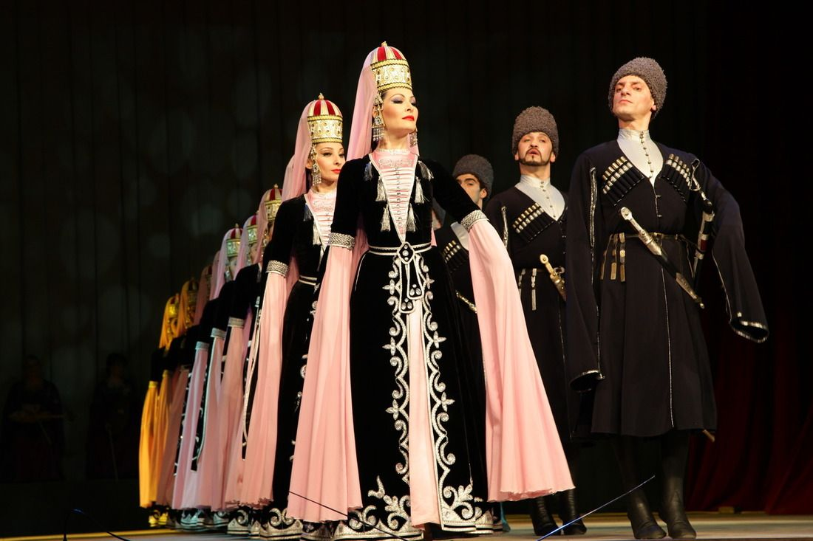
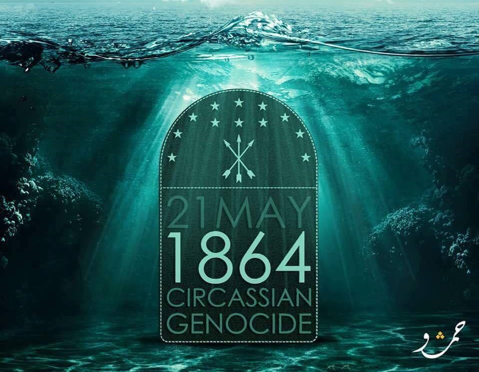

Danse circassienne
La danse circassienne, l'une des plus belles danses au monde, raconte l'histoire d'un peuple, ses coutumes, ses traditions et son histoire. Chaque étape ou geste a une histoire ou une signification, et il n'y a pas de place pour le hasard et l'improvisation.

Jour de deuil circassien
Le Jour de deuil circassien ou Jour de deuil circassien est le jour anniversaire de la fin de la guerre avec la Russie tsariste le 21 mai 1864 après JC et de la perte des Circassiens dans cette guerre, de leur perte de leurs terres, du martyre de près de deux millions de personnes. de leurs ancêtres, et le déplacement de 90% de ceux qui ont survécu, un déplacement forcé tragique de la terre de leur patrie, le Caucase du Nord.